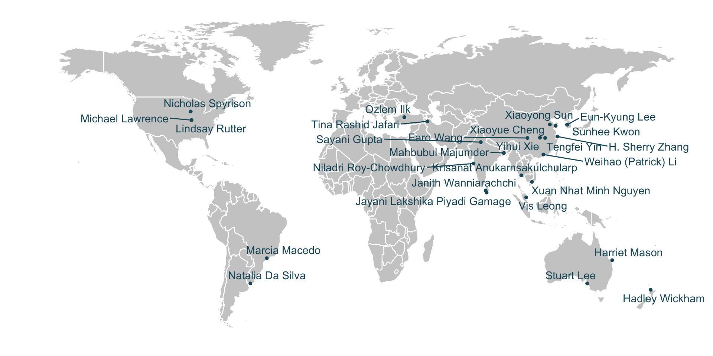

name | year | from | topic | co-advisors |
|---|---|---|---|---|
2028 | Thailand | Visual methods for exploring multivariate spatio-temporal networks with application to health transport | Michael Lydeamore | |
2027 | Malaysia | Heterogeneity effects of mechanical ventilation on respiratory infection caused by multidrug-resistant Acinetobacter Baumannii in the intensive care unit | Ewilly Liew, Michael Lydeamore, How Chinh Lee | |
2027 | Vietnam | Hierarchical Time Series: Data Structure and Visualisation | Tim Dwyer | |
2027 | Tabriz, Iran | Developing High-Dimensional Visualization Methods to Compare Shape Differences Between Two Sets of Financial Series | Farshid Vahid-Araghi | |
2026 | Colombo, Sri Lanka | Visualisation for XAI | Kate Saunders, Patricia Menendez, Thiyanga Talagala | |
2025 | Brisbane, Australia | Uncertainty visualisation | Sarah Goodwin, Susan Vanderplas | |
2025 | Weligama, Sri Lanka | Looking at Non-Linear Dimension Reductions as Models in the Data Space | Paul Harrison, Michael Lydeamore, Thiyanga Talagala | |
2024 | Guangzhou, China | Advances in Artificial Intelligence for Data Visualization: Developing Computer Vision Models to Automate Reading of Data Plots | Klaus Ackermann, Emi Tanaka, Susan Vanderplas | |
2023 | Shanghai, China | New tools for visualising and explaining multivariate spatio-temporal data | Ursula Laa, Nicholas Langrene, Patricia Menendez | |
2022 | Dubuque, Iowa | Interactive and dynamic visualization of high-dimensional data | Kim Marriot | |
2022 | Delhi, India | Visualization and analysis of probability distributions of large temporal data | Rob Hyndman, Peter Toscas | |
2021 | Adelaide, Australia | Exploratory data analysis for high-dimensional biological datasets | Paul Harrison, Matt Ritchie | |
2020 | Chengdu, China | Tidy tools for supporting fluent workflow in temporal data analysis | Rob Hyndman | |
2017 | Montevideo, Uruguay | Bagged projection methods for supervised classification in big data | Heike Hofmann | |
2016 | USA | Visualization Methods for Genealogical and RNA-sequencing Studies: Pertinence, software, and applications | Amy Toth | |
2015 | Qingdao, China | Interactive visualization for missing values, temperoal and areal data | Heike Hofmann | |
2014 | Mumbai, India | Explorations of the lineup protocol for visual inference: Application to high dimension low sample size problems and metrics to assess the quality | Heike Hofmann | |
2013 | Yichang, China | Dynamic graphics and reporting for statistics | Heike Hofmann | |
2013 | Dhaka, Bangladesh | Investigations into Visual Statistical Inference | Heike Hofmann | |
2013 | Wuhan, China | Visualization of biological data: Infrastructure, design and application | Eve Wurtele | |
2010 | Shandong, China | Diagnostics for nonlinear models with application to population pharmacokinetic modeling | Basil Nikolai | |
2008 | St Louis, USA | Interactive graphics, graphical user interfaces and software interfaces for the analysis of biological experimental data and networks | Eve Wurtele | |
2008 | Hamilton, New Zealand | Practical tools for exploring data and models | Heike Hofmann | |
2003 | Seoul, South Korea | Projection pursuit methods for exploratory supervised classification | ||
2004 | Ankara, Turkey | Exploratory multivariate longitudinal data analysis and models for multivariate longitudinal binary data | ||
2000 | Sao Paulo, Brazil | Modern applied statistics and animal populations in geographically complex landscapes: Data visualization and modeling | Brent Danielson | |
1999 | Seoul, South Korea | Clustering in multivariate data: Visualization, case and variable reduction |
Graduated and current PhD students
